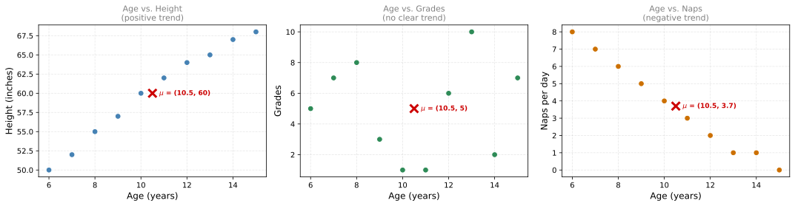
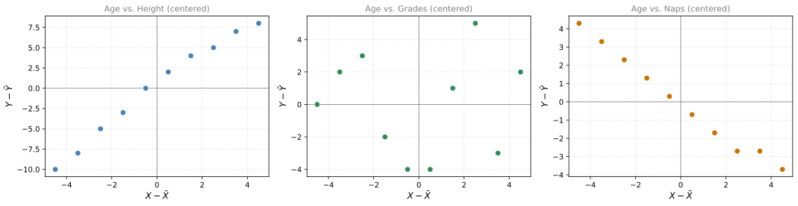

Covariance
probability
Each distribution has its own expected value and its own variance. But when you have two variables, there is something these measures do not capture: the relationship between them. As you might expect, the age of a child and their height are related (older children tend to be taller). How do we measure this? With a concept called covariance.
Motivation: Three Relationships
Consider a discrete random variable \(X\) representing the age of a child, and three other variables:
- \(Y_1\) = height of the child (in inches)
- \(Y_2\) = grades on a test
- \(Y_3\) = number of naps per day
Here is the data for 10 children:
The red cross marks the mean \((\bar{X}, \bar{Y})\) in each plot. You can see three different patterns:
- Age vs. Height: as age increases, height increases (points go up to the right).
- Age vs. Grades: no clear pattern (points are scattered randomly).
- Age vs. Naps: as age increases, naps decrease (points go down to the right).
The mean and variance of each variable individually cannot capture these relationships. We need a new measure.
Building Intuition for Covariance
Step 1: Center the Data
First, center both variables by subtracting their means. This moves the “balance point” to the origin:

Step 2: Look at the Signs of the Products
After centering, look at the sign of each point’s coordinates:
Positive covariance (Age vs. Height): When \(X - \bar{X}\) is positive (older than average), \(Y - \bar{Y}\) tends to also be positive (taller than average). When \(X - \bar{X}\) is negative, \(Y - \bar{Y}\) tends to be negative too. The coordinates have the same sign, so their product \((X - \bar{X})(Y - \bar{Y})\) is usually positive.
Near-zero covariance (Age vs. Grades): The signs of \(X - \bar{X}\) and \(Y - \bar{Y}\) have no consistent pattern. Sometimes same sign, sometimes opposite. The products cancel out.
Negative covariance (Age vs. Naps): When \(X - \bar{X}\) is positive, \(Y - \bar{Y}\) tends to be negative (and vice versa). The coordinates have opposite signs, so their product is usually negative.
Step 3: Average the Products
The covariance is the average of all these products:
\[ \text{Cov}(X, Y) = \frac{1}{n} \sum_{i=1}^{n} (x_i - \bar{x})(y_i - \bar{y}) \]
Or equivalently, in terms of expected values:
\[ \text{Cov}(X, Y) = \mathbb{E}\left[(X - \mathbb{E}[X])(Y - \mathbb{E}[Y])\right] \]
Computing Covariance
Age vs. Height (Positive Covariance)
\(\displaystyle \bar{X} = 10.5, \quad \bar{Y} = 60.0\)
\(\displaystyle \text{Cov}(X, Y_1) = \frac{1}{10} \sum (x_i - \bar{x})(y_i - \bar{y}) = \frac{170.0}{10} = 17.0\)
The covariance is positive because when age grows, height grows too.
Age vs. Naps (Negative Covariance)
\(\displaystyle \bar{X} = 10.5, \quad \bar{Y} = 3.7\)
\(\displaystyle \text{Cov}(X, Y_3) = \frac{1}{10} \sum (x_i - \bar{x})(y_i - \bar{y}) = \frac{-74.5}{10} = -7.45\)
The covariance is negative because as age increases, naps per day decrease.
Age vs. Grades (Near-Zero Covariance)
\(\displaystyle \bar{X} = 10.5, \quad \bar{Y} = 5.0\)
\(\displaystyle \text{Cov}(X, Y_2) = \frac{1}{10} \sum (x_i - \bar{x})(y_i - \bar{y}) = \frac{1.0}{10} = 0.1\)
The covariance is very close to zero because age and grades have no consistent linear relationship.
Summary
| Variables | Relationship | Covariance |
|---|---|---|
| Age vs. Height | Positive (grow together) | \(> 0\) |
| Age vs. Grades | None (no pattern) | \(\approx 0\) |
| Age vs. Naps | Negative (one grows, other shrinks) | \(< 0\) |
\[ \text{Cov}(X, Y) = \mathbb{E}\left[(X - \mathbb{E}[X])(Y - \mathbb{E}[Y])\right] \]
- Positive covariance: variables tend to move in the same direction.
- Negative covariance: variables tend to move in opposite directions.
- Near-zero covariance: no consistent linear relationship.
Review Questions
1. What does covariance measure?
TipAnswer
Covariance measures the direction of the linear relationship between two variables. It tells you whether the variables tend to increase together (positive), decrease together / move in opposite directions (negative), or have no consistent linear pattern (near zero).
2. Why do you center the data (subtract means) before computing covariance?
TipAnswer
Centering shifts the data so the mean is at the origin. This lets you use the sign of the coordinates to determine whether points tend to fall in the “same sign” quadrants (positive relationship) or “opposite sign” quadrants (negative relationship). Without centering, the location of the data would dominate and obscure the relationship.
3. If the covariance between two variables is 0, does that mean they are independent?
TipAnswer
Not necessarily. Covariance only measures linear relationships. Two variables can have a strong non-linear relationship (for example, \(Y = X^2\)) and still have zero covariance. Zero covariance means no linear trend, but other patterns may exist.
4. Two variables have covariance \(-15\). What does this tell you about their scatter plot?
TipAnswer
The scatter plot shows a downward trend: as one variable increases, the other tends to decrease. The negative sign means the centered coordinates tend to have opposite signs (when \(X\) is above average, \(Y\) is below average, and vice versa).